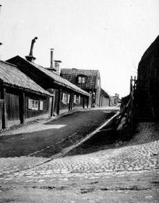
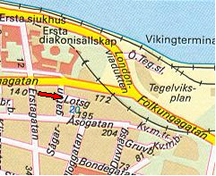
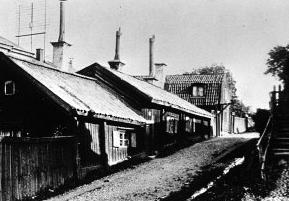
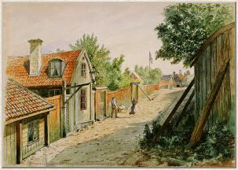
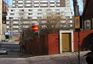
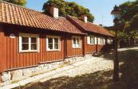
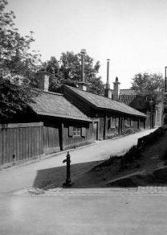
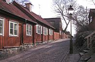

Lotsgatan
Gatan hette tidigare Skräddaregränden. Det fanns emellertid ytterligare en
Skräddargränd (i Gamla Stan) varför den lilla gatan
på Södermalm 1885 omdöptes till Lotsgatan. Möjligen
påverkades man då av närheten till Skeppargränd och hamnen och varvet nedanför berget.
Tio år senare då många av de stora kvarteren i
området delas skapas kvartersnamnen Lotsen, Utkiken
m. fl. Lotsgatan går mellan kvarteren Lotsen och Utki-
ken.
Lotsgatan 1
Stugorna på tomten är ditflyttade under renoveringen av bebyggelsen på Åsöberget 1964. Östra delen har timmerstomme från
Blommensberg, västra delen från Lillhagen i Älvsjö.
I den ursprungliga stugan på tomten bodde 1711 en gatuläggaränka. Om henne heter det vid redovisning av
beskattningsförmåga: »en gammal och uthfattig kiäring sitter heel ensam, har fuller två eldstäder men kan omöjeligen
betahla, ty hon går och tigger mest sina bijtar.«
|

Lotsgatan 1, 3, 5.

|
|


Lotsgatan 3, 5. Akvarell av Fritz Ahlgrensson 1901.
|
|
|

 2004. Lotsgatan 1. Lotsgatan börjar från Sågargatan. Nedanför syns Folkungagatan. 2004. Lotsgatan 1. Lotsgatan börjar från Sågargatan. Nedanför syns Folkungagatan.


Lotsgatan 1. 1926

2004. Hela Lotsgatan 1-9. Trappan till höger leder upp till Skeppargränd.
|